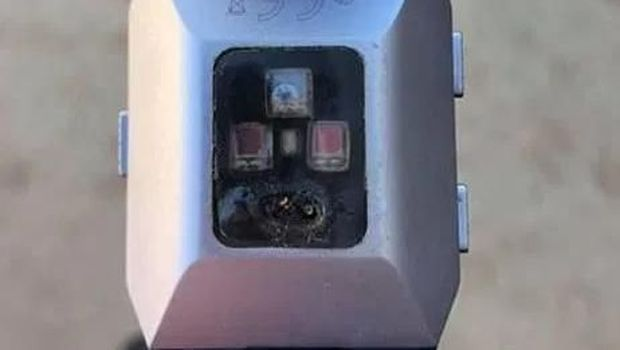

SmartWatch Miliknya Meledak, Pria Asal Amerika Ini Alami Luka Bakar Serius
By Rizki

Seorang pria asal Amerika bernama Ethan Landers mengalami luka bakar setelah jam tangan pintar miliknya meledak saat digunakan sewaktu dia tidur di tengah malam. Dia membagikan kisahnya pada akun facebook pribadi miliknya.
Dalam post tersebut dia menyertakan foto bagaimana luka yang ia terima dari meledaknya jam tangan pintar miliknya tersebut.
Dia menceritakan bagaimana dia langsung terbangun ketika jam tangan pintar miliknya tersebut terbakar dan mengeluarkan asap, kemudian dia mencoba untuk secepat mungkin mematikan kebakaran tersebut.
“Aku dengan cepat tersadar ketika Fitbitku mulai terbakar, jadi aku secepat mungkin mencoba untuk mematikanya” tulis Ethan dalam akun facebook pribadinya, sebagaimana dikutip dari The Sun akhir bulan lalu.
Karena gagal, dia kemudian melompat dari tempat tidur dan menyalakan lampu, kemudian dia membangunkan istrinya untuk melepas ikatan Fitbit miliknya.
“Dengan beberapa upaya yang gagal, saya melompat dari tempat tidur dan menyalakan lampu di mana istri saya dapat membuka kunci band pada Fitbit saya.”
Setelah mematikan jam tangan pintar yang terbakar tersebut, kemudian dia merasakan sakit yang intens, dan kemudian mulai menimbulkan luka, ia berujar jika jam tersebut seperti meleleh di tanganya.
“Itu terasa seperti jam itu meleleh di tanganku. Itu berasap dan asap keluar dari baterai Fitbit yang menyebabkan kamar kami berbau seperti benda elektronik yang terbakar”
Kemudian dia memanggil ahli medis untuk melihatnya apakah dia perlu ke UGD untuk melakukan pemeriksaan, karena lukanya memutih dan itu sudah melepuh.
“Kami memanggil seorang perawat untuk melihat apakah kami harus dilihat dan dia memberi tahu kami bahwa kami harus pergi ke UGD karena lukanya putih dan sudah melepuh”.
Kemudian, dia ke sebuah klinik untuk melakukan pemeriksaan, dalam pemeriksaan tersebut dia didiagnosa menderita luka bakar tingkat tiga, dimana nantinya akan menimbulkan bekas setelah menjalani pengobatan.
Setelah kejadian tersebut, Fitbit kemudian menanggapi kasus Ethan tersebut, dan mereka saat ini tengah melakukan penyelidikan terkait terbakarnya jam tangan milik Ethan tersebut.
“Kesehatan dan keselamatan pelanggan kami adalah prioritas utama kami, dan kami menanggapi laporan dari tuan Landers dengan serius” ujar juru bicara Fitbit kepada The Sun.
“Kami telah berbicara dengan Tuan Landers dan secara aktif menyelidiki masalah ini. Produk Fitbit dirancang dan diproduksi sesuai dengan standar yang ketat dan menjalani pengujian internal dan eksternal yang luas untuk memastikan keamanan pengguna kami,” imbuhnya.
source: The Sun
Sampai jumpa lagi di Tulisan-tulisan lain dari saya, dan jangan lupa untuk baca Artikel dan Berita menarik lainya seputar teknologi dari Rizki


 Natapradipta17@gmail.com
Natapradipta17@gmail.com